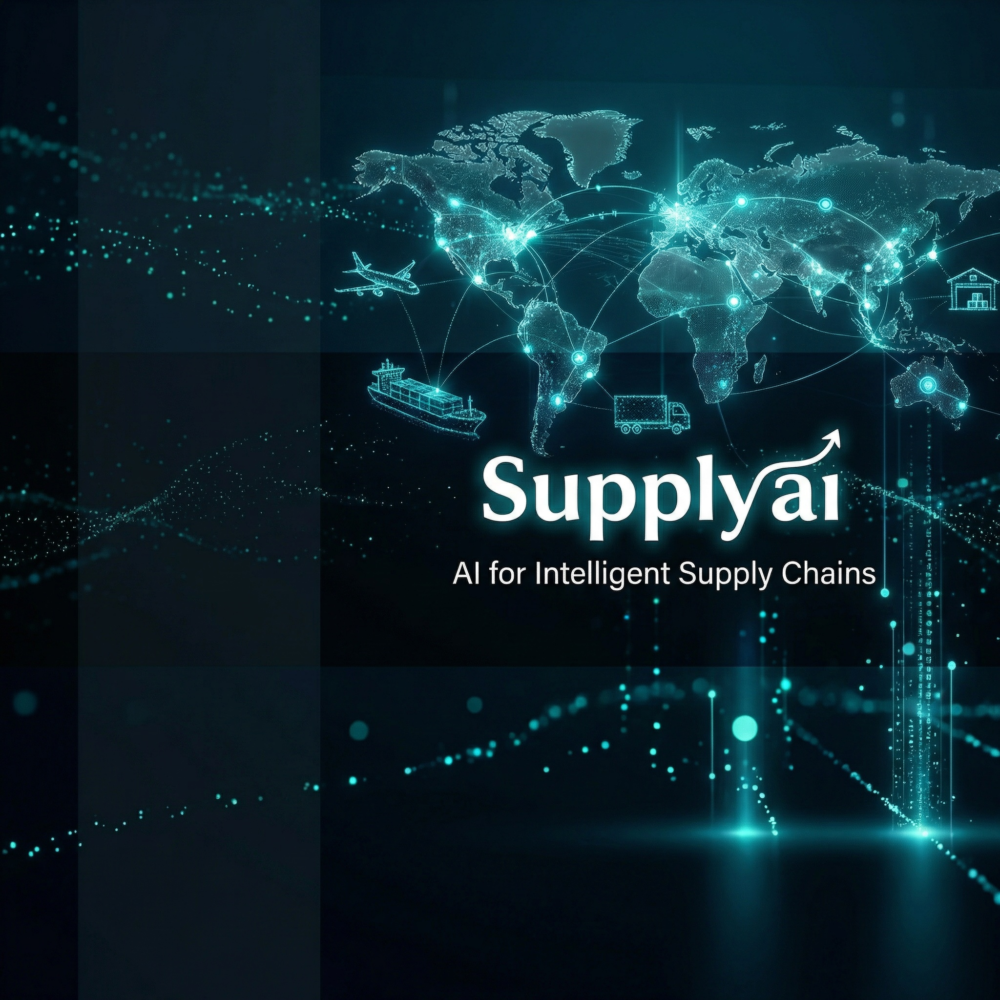

SUPPLYAI is creating an intelligent operating system for North America—connecting retail demand, wholesale operations, inventory, compliance, and cash flow through real-world AI deployment.
The Asian food supply chain remains highly fragmented, manual, and rich in untapped data. We change that.

Across North America, many long-established Asian food distributors are facing a generational transition. At the same time, the industry continues to rely on manual workflows and disconnected systems.
This creates a rare opportunity to modernize an essential supply chain with better data, better tools, and better operating systems.
Turning fragmented operational activity into structured, actionable intelligence.
Convert voice messages, handwritten notes, and text instructions into structured purchase orders instantly.
Use operational data and local demand signals to improve purchasing and inventory planning.
Automate invoice generation, accounts receivable support, and key back-office processes seamlessly.
Improve warehouse execution with smarter replenishment signals and velocity-based decisions.
Bring compliance checks into the operational workflow to support supplier oversight and audit readiness.
SUPPLYAI is developed alongside real operating environments, validating technology against actual operational problems.
Our vision is to transform the Asian food supply chain from a traditional, labor-intensive network into a transparent, data-driven operating ecosystem.